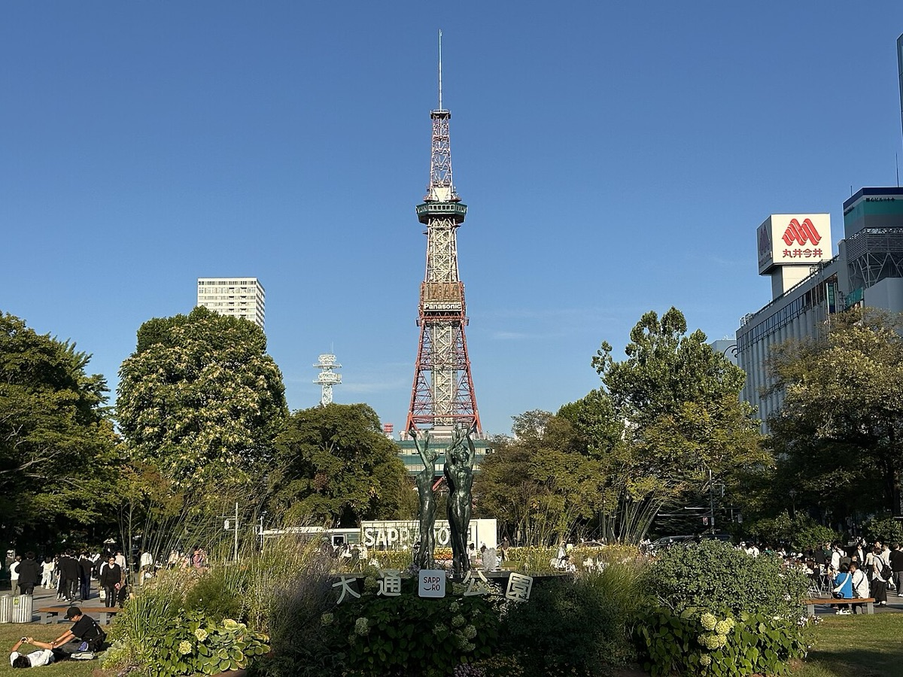
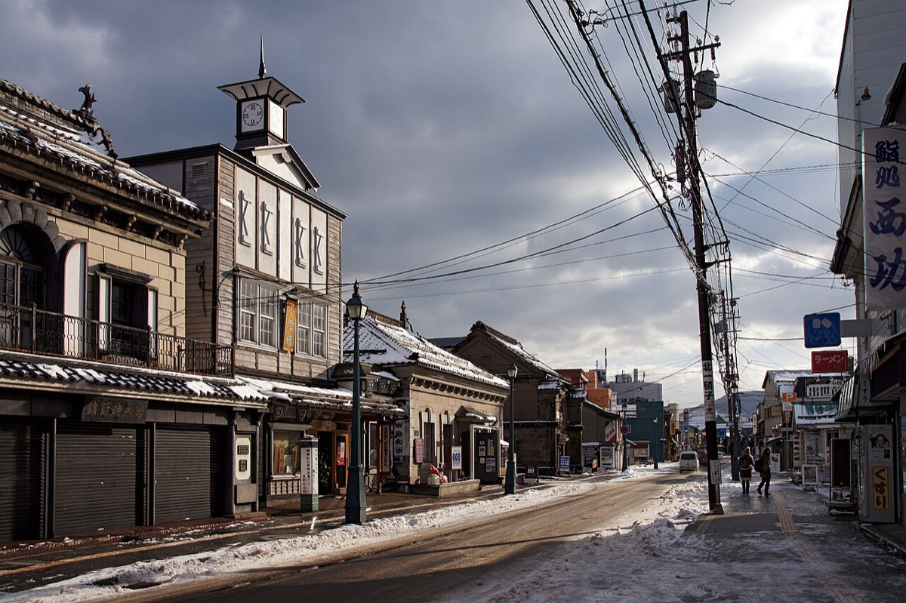
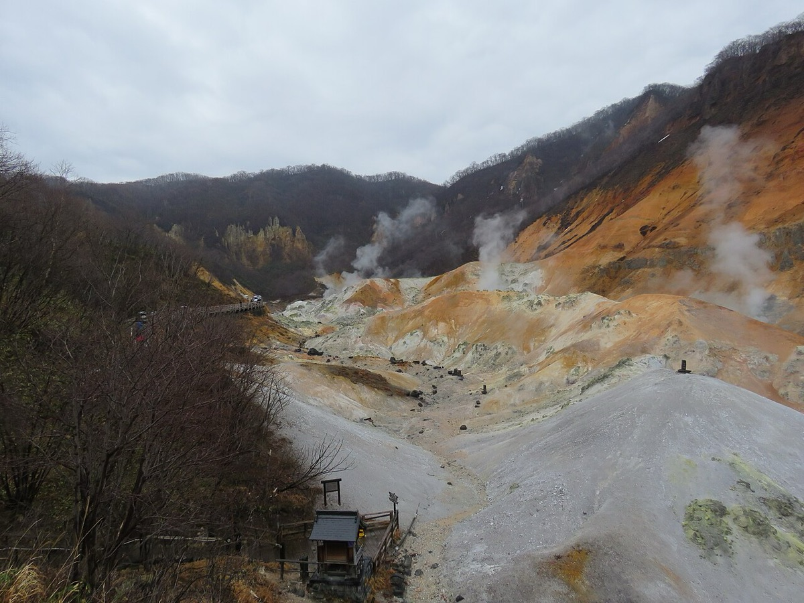

✈ 신치토세공항
삿포로 · 6박
DAY 1~3, 5, 7~8
오타루 · 1박
DAY 4~5 · 운하와 유리
노보리베츠 · 1박
DAY 6~7 · 지옥계곡
HOKKAIDO
여행 전체 동선 · 삿포로를 거점으로 오타루와 노보리베츠를 한 번씩 다녀온다
Day 1 · 잔디 위의 첫 끼 10월 4일 (금)
새벽 버스로 인천에 가서 오전 비행기를 탄다. 숙소에 짐만 맡기고 빵을 사서 오도리공원에 돗자리를 편다.
집 출발 05:30 09:15 인천 → 삿포로 ✈ 스스키노 숙소 13:00 14:40 오도리공원 피크닉 러브 에스프레소 16:50 카츠잇센 17:40
Day 1의 하루 곡선 · 새벽에 나와 스스키노의 밤까지
FLIGHT
인천 → 신치토세09:15 출발 · 11:50 도착
오늘의 미션
오도리공원 피크닉돗자리와 빵을 챙겨서
집 → 스스키노
광교 버스터미널 인천공항 T1 신치토세공항 미나미산조 숙소 🚌 1시간 ✈ 2시간 35분 🚆 쾌속 🚶 도보 체크인이 15시라 먼저 짐만 맡기고 공원으로 간다
타임라인
시간 일정 메모
05:30 버스터미널 05:58 광교 → 인천공항 1터미널 1시간 공항버스. 07:15 출국 수속 09:15 인천 → 신치토세 ✈ 2시간 35분 11:50 도착. 13:00 신치토세공항 → 미나미산조 1시간 40분 미나미산조에서 숙소까지 도보. 체크인은 15:00 이라 수하물만 맡긴다. 14:40 오도리공원 피크닉 오늘의 미션 도보 11분. 동구리 빵집에서 먹을 걸 산다. 돗자리 챙기기. 비가 오면 우동노소우미야로. 16:00 오도리공원 산책 여유 16:20 다누키코지 상점가 쇼핑 16:50 러브 에스프레소 티타임 라떼. 17:40 카츠잇센 식사 회전초밥. 19:10 스스키노와 오도리공원 산책 야경
DAY 1 체크포인트
체크인 전 시간을 공원에 쓰는 게 효율적입니다. 오후 1시에 도착해 15시 체크인까지 비는 두 시간을, 짐만 맡기고 공원 피크닉으로 채웠습니다.10월 초 삿포로는 쌀쌀합니다. 낮에도 15도 안팎이라 잔디에 앉으려면 겉옷과 돗자리가 필요합니다.신치토세공항에서 시내까지 한 시간 반이 넘습니다. 첫날 저녁 일정은 숙소 반경으로만 잡는 편이 안전합니다.
Day 2 · 스프카레와 동물원 10월 5일 (토)
가라쿠에서 줄을 서서 스프카레를 먹고, 지하철로 마루야마까지. 동물원과 신궁을 보고 저녁은 카이센동.
체크아웃 09:20 11:00 스프카레 가라쿠 마루야마 동물원 13:30 15:30 홋카이도 신궁 시하치 카이센동 저녁
Day 2의 하루 곡선 · 지하철 한 줄로 끝나는 하루
STAY
컴포트 호텔 삿포로 스스키노도보 1분 거리로 숙소 이동
오늘의 미션
마루야마 동물원09:30~16:30 · 입장 800엔
스스키노 → 마루야마
컴포트 호텔 스프카레 가라쿠 오도리역 마루야마코엔역 🚶 6분 🚶 이동 🚇 도자이선 30분 숙소를 도보 1분 거리로 옮기는 날이라 짐 이동 부담이 없다
타임라인
시간 일정 메모
09:20 그랑벨 호텔 체크아웃 체크아웃 11:00. 10:40 컴포트 호텔 삿포로 스스키노 도보 1분 체크인 15:00이라 짐만 맡긴다. 11:00 스프카레 가라쿠 식사 11:30 오픈인데 11시부터 줄을 선다. 11:30~15:00, 17:00~20:30.12:30 마루야마 동물원으로 30분 도자이선 오도리역 → 마루야마코엔역. 13:30 마루야마 동물원 오늘의 미션 09:30~16:30. 입장 800엔. 15:30 홋카이도 신궁과 마루야마 공원 명소 동물원 바로 옆. 10월이면 단풍이 들기 시작한다. 저녁 시하치 식사 카이센동. 토요일 11:00~15:00, 16:00~23:00.
DAY 2 체크포인트
스프카레 가라쿠는 오픈 30분 전부터 줄을 서야 합니다. 11:30 오픈인데 11시에 가야 첫 타임에 들어갑니다.동물원과 신궁은 같은 공원 안에 있습니다. 마루야마 공원을 사이에 두고 붙어 있어 한 번 들어가면 걸어서 다 봅니다.숙소를 도보 1분 거리로 옮긴 날이라 체크아웃과 체크인 사이에 짐을 끌고 다닐 일이 없습니다.
Day 3 · 과자 공장과 양고기 10월 6일 (일)
부타동으로 점심을 먹고 지하철 끝까지 가서 과자 공장을 본다. 저녁은 예약해둔 징기스칸.
체크아웃 08:30 11:00 잇핀 부타동 시로이 코이비토 파크 14:30 17:30 스스키노 복귀 징기스칸 에조히츠지 18:45
Day 3의 하루 곡선 · 시내에서 서쪽 끝까지 갔다 온다
STAY
Hotel Forza Sapporo Station삿포로역 앞
오늘의 미션
시로이 코이비토 파크10:00~18:00 · 어른 800엔
삿포로역 → 미야노사와
삿포로역 오도리역 미야노사와역 시로이 코이비토 파크 🚇 난보쿠선 🚇 도자이선 🚶 도보 지하철로 50분, 도자이선 서쪽 끝이다
타임라인
시간 일정 메모
아침 호텔 조식 식사 컴포트 호텔. 08:30 체크아웃 체크아웃 10:00. 10:00 Hotel Forza Sapporo Station 지하철 10분 걸어서 20분. 체크인 14:00. 11:00 잇핀 식사 부타동. 스텔라플레이스 6층, 11:00~22:00. 13:30 미야노사와로 50분 삿포로역 → 오도리역 → 미야노사와역. 14:30 시로이 코이비토 파크 오늘의 미션 10:00~18:00(입장 17:30까지). 어른 800엔. 17:30 스스키노역으로 1시간 18:45 징기스칸 에조히츠지 예약 완료 ✓ 스스키노역 2번 출구에서 1분, 2층.
DAY 3 체크포인트
시로이 코이비토 파크는 도자이선 서쪽 끝입니다. 편도 50분이라 왕복 두 시간을 비워야 합니다. 오후를 통째로 쓰는 일정입니다.징기스칸은 예약하는 쪽이 낫습니다. 주말 스스키노는 대기가 깁니다.삿포로역 쪽에 묵는 날이라 스텔라플레이스와 다이마루에서 시간을 보내기 좋습니다. 포켓몬센터는 다이마루 8층, 애니메이트도 역 근처입니다.
Day 4 · 유리와 운하 10월 7일 (월)
JR로 40분이면 오타루다. 사카이마치도리에서 오후를 다 쓰고, 해 질 녘에 운하로 내려간다.
체크아웃 07:30 09:20 오타루역 야부한 소바 11:00 12:30 사카이마치도리 오타루운하 17:30 맥주양조장 18:00
Day 4의 하루 곡선 · 상점가에서 운하의 일몰까지
MOVE
JR 하코다테선삿포로 → 오타루 45분
STAY
그리드 프리미엄 호텔 오타루대욕탕 있음
삿포로 → 오타루
삿포로역 오타루역 그리드 프리미엄 호텔 사카이마치도리 🚆 보통 45분 🚶 10분 🚶 도보 체크인 전에 호텔에 짐을 맡기고 상점가로 나간다
타임라인
시간 일정 메모
07:30 체크아웃 09:20 삿포로 → 오타루 45분 JR 하코다테선 보통. 내일 수족관 버스 시간표를 오타루역 3번 승강장에서 미리 확인해둔다. 10:20 그리드 프리미엄 호텔 도보 10분 수하물 보관. 체크인 15:00. 11:00 점심 식사 야부한 소바 11:15~14:30. 나루토는 11:00~21:00. 12:30 오르골당과 사카이마치도리 오늘의 미션 09:00~18:00. 유리공예점과 기타이치 유리공방, 르타오. 오후 체크인과 휴식 대욕탕이 있다. 17:30 오타루운하 야경 이날 일몰 17:55. 가스등이 켜지는 시간에 맞춰 간다.18:00 오타루맥주양조장 오타루창고 식사 운하에서 도보 4분.
DAY 4 체크포인트
오타루는 한나절이면 다 보지만 하루를 쓸 가치가 있습니다. 사카이마치도리는 상점 하나하나가 목적지라 걷다 보면 다섯 시간이 금방 갑니다.운하는 해 질 녘에 가세요. 낮에는 그냥 좁은 수로인데, 가스등이 켜지면 창고 벽이 물에 비칩니다. 10월 초 일몰은 17시 55분 전후입니다.다음 날 수족관 버스 시간을 미리 확인하세요. 오타루역 3번 승강장 11번 슈쿠쓰선이고 30분 간격입니다.
Day 5 · 쇼 시간표대로 10월 8일 (화)
수족관 동물쇼 시간에 맞춰 오전을 보내고, 청어구이로 점심. 오후에 삿포로로 돌아온다.
체크아웃 08:00 10:10 오타루 아쿠아리움 아오츠카 청어구이 12:30 14:30 오타루 영빈관 삿포로 복귀 17:00 에비텐 텐동 19:00
Day 5의 하루 곡선 · 바닷가에서 다시 시내로
MOVE
11번 슈쿠쓰선오타루역 3번 승강장 · 240엔
오늘의 미션
오타루 아쿠아리움09:00~17:00 · 어른 1,800엔
오타루 → 삿포로
그리드 호텔 오타루 아쿠아리움 오타루 영빈관 오타루역 삿포로 🚌 30분 🚶 13분 🚌 30분 🚆 45분 짐은 호텔에 맡겨두고 바닷가를 돌다 저녁에 찾는다
타임라인
시간 일정 메모
08:00 체크아웃 수하물 보관. 09:40 오타루 아쿠아리움행 버스 30분 오타루역 3번 승강장 11번 슈쿠쓰선, 240엔. 8:10 / 8:40 / 9:10 / 9:40 / 10:10. 10:10 오타루 아쿠아리움 오늘의 미션 09:00~17:00(최종 입관 16:30), 어른 1,800엔 현장 구매. 쇼 시간표: 돌고래 10:00, 바다코끼리 11:00, 물개 11:20, 큰바다사자 11:30, 펭귄 피크닉 11:40. 12:30 아오츠카 식사 수족관에서 도보 4분. 청어구이, 웨이팅 있음. 10:00~21:00. 오후 히요리야마 등대 선택 언덕을 걸어서 15분. 14:30 오타루 영빈관 명소 09:00~17:00. 주변만 300엔, 내부까지 1,300엔. 15:30 오타루역으로 30분 11번 버스. 15:40 / 16:10 / 16:50. 17:00 삿포로로 45분 호텔에서 짐을 찾아 호텔 혹케 클럽 삿포로로. 19:00 에비텐 텐동 분점 식사 스스키노역에서 도보 6분. 화요일 11:30~21:00.
DAY 5 체크포인트
수족관은 쇼 시간표를 먼저 보고 동선을 짜세요. 10시부터 11시 40분까지 다섯 개가 연달아 있어, 그 시간대에 맞춰 들어가면 한 번에 다 봅니다.슈쿠쓰선 버스는 30분 간격입니다. 한 대를 놓치면 그대로 30분이 밀리니 돌아오는 버스 시간도 같이 적어두세요.짐은 체크아웃하면서 호텔에 맡기고 저녁에 찾아 가는 동선이 편합니다.
Day 6 · 지옥계곡 10월 9일 (수)
TV 타워 앞에서 송영버스를 타고 두 시간. 체크인하자마자 지옥계곡을 걷고, 저녁은 털게 뷔페.
체크아웃 08:30 점심 이치겐 라멘 송영버스 탑승 12:45 15:15 마호로바 체크인 지옥계곡·오유누마 15:40 털게 뷔페 저녁
Day 6의 하루 곡선 · 시내를 떠나 온천 마을로
MOVE
송영버스삿포로 TV 타워 ↔ 노보리베츠 · 편도 2,000엔
STAY
Hotel Mahoroba뷔페 디너와 온천
오늘의 미션
지옥계곡과 오유누마왕복 도보 1시간
삿포로 → 노보리베츠
호텔 혹케 삿포로 TV 타워 마호로바 호텔 지옥계곡 🚶 도보 🚌 송영버스 2시간 🚶 도보 송영버스는 미리 예약하고 메일을 보여준다
타임라인
시간 일정 메모
08:30 체크아웃 점심 이치겐 라멘 식사 12:45 삿포로 TV 타워 지하 1층 집합 리셉션 데스크. 예약 메일을 보여준다. 비용은 호텔 체크아웃 때 청구(왕복 2,000엔씩). 13:15 노보리베츠로 2시간 송영버스. 15:15 마호로바 호텔 체크인 체크인 14:00. 15:40 지옥계곡과 오유누마 오늘의 미션 08:00~18:00, 왕복 도보 1시간. 천연 족탕에서 쓸 수건을 챙긴다. 저녁 뷔페 디너 식사 털게 무제한. 밤 온천 온천
DAY 6 체크포인트
송영버스는 사전 예약제입니다. 삿포로 TV 타워 지하 1층에서 타고, 요금은 호텔 체크아웃 때 왕복으로 청구됩니다. 예약 메일을 보여줘야 합니다.지옥계곡은 체크인 직후에 걷는 게 좋습니다. 18시에 닫히고 왕복 한 시간이라, 저녁 뷔페 전에 끝내야 여유가 있습니다.오유누마 천연 족탕에 수건을 가져가세요. 계곡물에 발을 담그는 자리라 닦을 것이 없으면 곤란합니다.
Day 7 · 온천에서 야경으로 10월 10일 (목)
아침 온천을 하고 송영버스로 돌아온다. 라멘과 오락실로 오후를 보내고 모이와야마에서 야경.
아침 온천 08:00 10:00 삿포로 복귀 테시카가라멘 13:30 15:00 라운드원 모이와야마 전망대 17:30 저녁 18:30
Day 7의 하루 곡선 · 아침 탕에서 산 위의 야경까지
MOVE
로프웨이 + 미니케이블카왕복 2,100엔
오늘의 미션
모이와야마 전망대해 질 무렵에 올라간다
노보리베츠 → 모이와야마
마호로바 호텔 삿포로 TV 타워 히가시혼간지마에 산로쿠역 전망대 🚌 송영버스 2시간 🚋 노면전차 30분 🚌 셔틀 🚡 로프웨이 셔틀버스는 17시부터 15분 간격으로 온다
타임라인
시간 일정 메모
07:00 조식 식사 08:00 아침 온천 온천 09:00 체크아웃 9시 40분까지 로비에 모여야 송영버스를 탄다. 10:00 삿포로 TV 타워로 2시간 송영버스. 12:00 비아 인 프라임 삿포로 오도리 도보 7분 수하물 보관. 체크인 15:00. 13:30 테시카가라멘 요코초점 식사 매운 콘버터 미소라멘. 11:00~15:30, 16:30~01:00. 15:00 라운드원 오락 도보 3분. 16:20 모이와야마로 1시간 노면전차 히가시혼간지마에 → 로프웨이이리구치 200엔, 30분. 셔틀버스는 17시부터 15분 간격. 산로쿠역에서 로프웨이와 케이블카 왕복권 2,100엔. 17:30 모이와야마 전망대 오늘의 미션 삿포로 야경. 18:30 저녁 식사
DAY 7 체크포인트
모이와야마 셔틀버스는 17시부터입니다. 그 전에 도착하면 로프웨이 입구에서 산로쿠역까지 걸어 올라가야 합니다. 해 질 녘에 맞춰 가면 시간이 딱 맞습니다.노면전차와 로프웨이 요금은 따로입니다. 전차 200엔, 로프웨이와 미니케이블카 왕복 2,100엔입니다.송영버스는 집합 시각을 어기면 그대로 놓칩니다. 체크아웃을 9시에 끝내고 로비에서 기다리는 편이 안전합니다.
Day 8 · 마지막 장보기 10월 11일 (금)
짐을 옮기지 않는 유일한 날. 우동으로 점심을 먹고 선물과 다음 날 조식을 산다.
늦은 기상 오전 11:30 우동노소우미야 선물 쇼핑 오후 저녁 테시아게 라멘 내일 조식 구매 밤
Day 8의 하루 곡선 · 느리게 걷고 많이 담는 하루
타임라인
시간 일정 메모
오전 늦게 일어나기 숙소를 옮기지 않는 유일한 날이다. 11:10 우동노소우미야로 도보 11분 11:30 우동노소우미야 식사 11:30~19:45. 오후 선물 쇼핑 오늘의 미션 오도리와 스스키노 일대. 과자와 기념품. 저녁 테시아게 라멘 식사 밤 편의점에서 내일 조식 구매 아침 일찍 공항으로 나간다.
DAY 8 체크포인트
선물은 마지막 날 공항이 아니라 하루 전 시내에서 사는 편이 낫습니다. 공항 매장은 종류가 적고 아침에 줄이 깁니다.숙소를 옮기지 않는 날을 하나 끼워두면 숨통이 트입니다. 8박 동안 숙소를 여섯 번 옮긴 일정이라, 짐을 풀어둔 채 보내는 하루가 필요했습니다.다음 날 조식은 전날 밤 편의점에서 사둡니다. 아침 체크아웃이 빠릅니다.
Day 9 · 신치토세에서 10월 12일 (토)
사둔 빵으로 아침을 먹고 공항으로. 오후 비행기로 인천에 돌아온다.
조식과 체크아웃 08:00 09:30 신치토세공항 삿포로 → 인천 ✈ 13:00 16:10 인천 도착 집 저녁
Day 9의 하루 곡선 · 아침에 나가 저녁에 도착한다
FLIGHT
신치토세 → 인천13:00 출발 · 16:10 도착
숙소 → 집
비아 인 프라임 신치토세공항 인천공항 집 🚆 1시간 30분 ✈ 3시간 10분 🚌 공항버스 출국 편 공항버스는 미리 예약해뒀다
타임라인
시간 일정 메모
08:00 조식과 체크아웃 전날 사둔 걸로. 09:30 신치토세공항으로 1시간 30분 11:00 출국 수속 공항에서 남은 선물을 산다. 13:00 신치토세 → 인천 ✈ 3시간 10분 16:10 도착.
DAY 9 체크포인트
신치토세공항은 공항 자체가 쇼핑몰입니다. 시로이 코이비토와 롯카테이 매장이 다 있어, 못 산 선물이 있으면 여기서 해결됩니다.시내에서 공항까지 한 시간 반을 봅니다. JR 쾌속 에어포트가 가장 빠르지만 주말 아침에는 자리가 없을 수 있습니다.귀국 공항버스를 미리 예약해두면 인천 도착 후 대기가 없습니다.
전체 컨셉
8박 9일인데 삿포로에만 여섯 밤을 잤다. 오타루와 노보리베츠를 각각 1박으로 끊고 나머지는 삿포로로 돌아오는 구조라, 긴 이동이 세 번밖에 없다. 대신 숙소를 여섯 번 옮겼다.
이 일정의 뼈대
삿포로를 거점으로 쓴 이유 오타루는 JR로 45분, 노보리베츠는 송영버스로 두 시간이다. 둘 다 당일치기도 가능한 거리지만 1박씩 붙여야 아침 시간을 쓸 수 있다. 그 외의 날은 전부 삿포로로 돌아와 짐 이동을 줄였다.숙소를 자주 옮긴 대가 가격과 위치를 날마다 최적화한 결과 여섯 번을 옮겼다. 체크아웃과 체크인 사이에 짐을 맡기는 일이 매일 반복되므로, 역이나 상점가에서 가까운 숙소만 골랐다.하루에 큰 덩어리 하나 시로이 코이비토 파크는 왕복 두 시간, 오타루 수족관은 버스가 30분 간격, 모이와야마는 환승이 세 번이다. 이런 곳은 하루에 하나만 넣었다.마지막 전날을 비워뒀다 8일차는 숙소를 옮기지 않는 유일한 날로 두고 선물 쇼핑에 썼다. 귀국 당일 아침에 몰아 사면 공항에서 쫓긴다.
삿포로 札幌 방화선에서 시작된 도시

사진 · ノボホショコロトソ · CC BY 4.0
방화선에서 시작된 오도리공원과 삿포로 TV 타워, 격자로 뻗은 거리, 시계탑, 그리고 가을 단풍
삿포로는 150년 조금 넘은 도시다. 1869년에 개척사가 설치되고 1871년에 시가지 측량이 시작되면서 바둑판처럼 구획됐다. 지금 공원인 오도리는 원래 공원이 아니라, 도시 한가운데를 가로질러 그은 폭 100m가 넘는 방화선이었다.
알고 가면 보이는 것
오도리공원은 불을 막으려고 만들었다 1871년에 북쪽 관청 구역과 남쪽 상업·주거 구역을 가르는 방화선으로 그어졌다. 나중에 가로수가 심기고 공원이 됐지만, 기능상으로는 지금도 도로다. 도심 한가운데에 이만한 녹지가 통으로 남은 건 그 때문이다.주소가 좌표처럼 읽힌다 오도리와 소세이강을 기준으로 북·남·동·서 몇 조 몇 정목 식으로 번호가 붙는다. 스스키노가 미나미 4조 근처라는 것만 알면 지도 없이도 방향을 잡을 수 있다. 개척 당시 격자 측량이 그대로 주소 체계가 됐다.삿포로라는 이름은 아이누어 마른 큰 강을 뜻하는 삿 포로 페쓰, 혹은 큰 습지가 있는 곳을 뜻하는 말에서 왔다는 설이 유력하다. 한자 札幌은 소리를 빌려 적은 것이라 글자 뜻과는 상관이 없다.시로이 코이비토는 1976년 이시야제과가 내놓은 과자로, 스키를 타고 내려오던 창업자가 흰 눈을 보고 던진 말에서 이름을 따왔다. 공장을 통째로 관광지로 만든 시로이 코이비토 파크는 도자이선 서쪽 끝 미야노사와에 있다.
현장 메모
10월 초는 겉옷이 필요하다 낮에도 15도 안팎이고 해가 지면 더 떨어진다. 공원에 앉으려면 돗자리와 담요가 있어야 한다.스프카레는 줄을 선다 가라쿠는 11:30 오픈인데 11시부터 기다려야 첫 타임에 들어간다.모이와야마 셔틀은 17시부터 그 전에 가면 로프웨이 입구에서 산로쿠역까지 걸어 올라가야 한다.
오타루 小樽 청어가 남긴 항구

사진 · 663highland · CC BY 2.5
하역선이 드나들던 오타루 운하와 석조창고, 가스등, 청어 시대의 유리 램프, 그리고 증기시계
오타루는 메이지에서 다이쇼 사이 청어로 번 돈이 쌓인 항구다. 1923년에 완성된 운하는 풍경을 위해 판 게 아니라, 앞바다에 선 큰 배의 짐을 거룻배로 창고 앞까지 실어 나르려고 만든 물류 시설이었다.
알고 가면 보이는 것
운하가 휘어 있는 이유 바다를 메워 만든 수로라 직선이 아니라 해안선을 따라 완만하게 굽는다. 길이 1,140m. 전후에 부두가 정비되면서 거룻배가 필요 없어졌고, 운하는 용도를 잃었다.한 번 메워질 뻔했다 쓸모없어진 운하를 메워 도로로 바꾸는 계획이 섰고, 1972년에 석조창고를 부수기 시작하자 시민들이 운하를 지키자는 운동을 시작했다. 20년 가까운 논쟁 끝에 1986년에 폭의 절반만 메우고 나머지를 산책로로 정비하는 선에서 합의됐다. 지금 걷는 보도가 그 절반이다.유리공예는 어업 도구였다 청어잡이에 쓰는 유리 부표와, 전기가 들어오기 전 집집마다 쓰던 석유램프가 오타루 유리의 뿌리다. 1901년 창업한 기타이치 유리가 램프를 관광 선물로 팔면서 공예로 돌아섰다. 청어가 끊기고 전기가 들어오자 장인들이 식기와 소품으로 품목을 바꾼 것이다.석조창고가 그대로 남은 이유 운하 옆 창고들은 헐리지 않고 식당과 상점으로 바뀌었다. 쇠퇴가 빨랐던 덕분에 재개발이 늦었고, 그 사이에 보존 쪽으로 방향이 잡혔다.
현장 메모
운하는 해 질 녘에 낮에는 좁은 수로다. 가스등이 켜지면 창고 벽이 물에 비친다. 10월 초 일몰은 17시 55분 전후.사카이마치도리는 다섯 시간 상점 하나하나가 목적지라 생각보다 오래 걸린다.수족관 버스는 30분 간격 오타루역 3번 승강장 11번 슈쿠쓰선, 240엔. 돌아오는 시간도 같이 적어둘 것.
노보리베츠 登別 폭발 화구 위의 온천

사진 · Calistemon · CC BY-SA 4.0
폭발 화구 자리에 남은 지옥계곡의 수증기, 130도 유황천이 솟는 오유누마, 온천을 지키는 오니, 그리고 10월의 단풍
노보리베츠라는 이름은 아이누어 누푸르 펫, 색이 짙은 강에서 왔다. 상류에서 온천물이 섞여 들어와 강이 뿌옇게 흐려 보였다는 뜻이다. 그 상류가 지금의 지옥계곡이다.
알고 가면 보이는 것
지옥계곡은 분화구 자국 굿타라 화산과 히요리야마의 활동으로 생긴 폭발 화구 자리다. 지름 약 450m, 면적 11ha에 이르는 구덩이 전체에서 수증기와 유황 가스가 올라온다. 산책로가 그 위에 목책으로 깔려 있다.오유누마는 바닥이 130도 히요리야마가 터진 자리에 물이 고인 둘레 1km쯤의 호리병 모양 늪이다. 바닥에서 약 130도의 유황천이 솟고, 표면도 40~50도다. 수면이 잿빛으로 보이는 건 떠 있는 유황 때문이다.천연 족탕은 계곡물이다 오유누마에서 흘러나온 물이 식으면서 적당한 온도가 되는 지점에 족탕이 있다. 수건을 챙겨 가지 않으면 발을 닦을 방법이 없다.오니가 서 있는 이유 유황 연기가 솟는 땅을 지옥에 빗대면서, 지옥을 지키는 도깨비 오니가 마을의 상징이 됐다. 온천가 곳곳에 오니 상이 서 있고 축제도 오니를 주제로 연다.
현장 메모
송영버스는 예약제 삿포로 TV 타워 지하 1층에서 타고, 요금은 호텔 체크아웃 때 왕복으로 청구된다. 예약 메일을 보여줘야 한다.계곡은 18시에 닫는다 왕복 한 시간이라 체크인 직후에 걷는 게 안전하다.집합 시각을 지킬 것 돌아오는 버스는 로비 집합 시각을 넘기면 그대로 놓친다.


,_Noboribetsu_Onsen,_Hokkaido,_April_2023_05.jpg){kind=link}